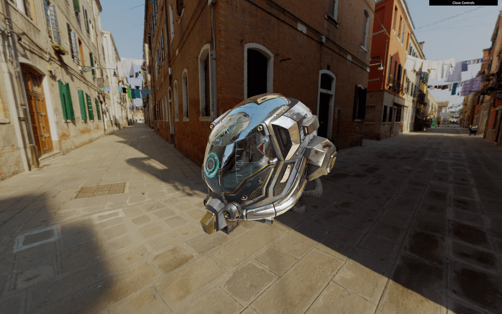
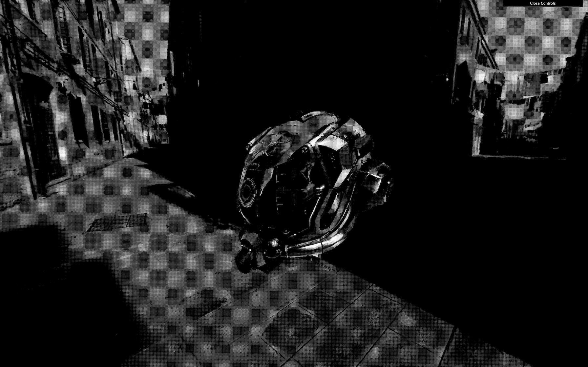
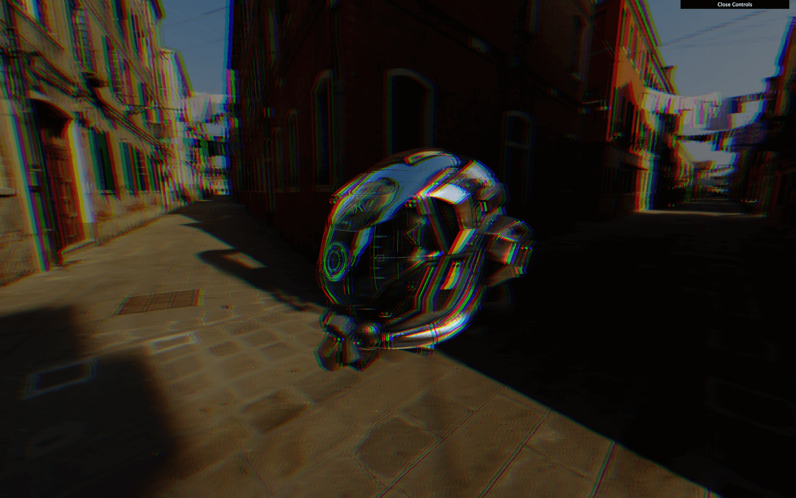
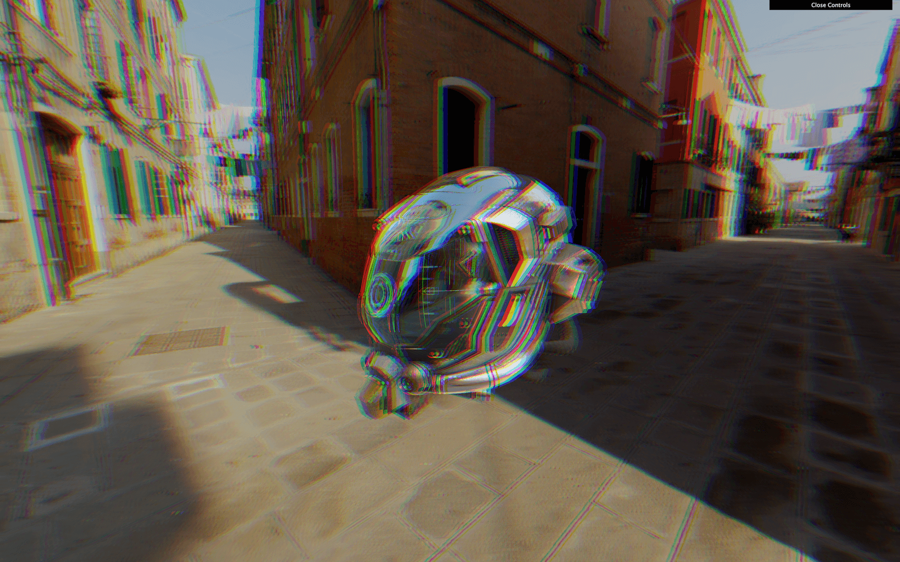
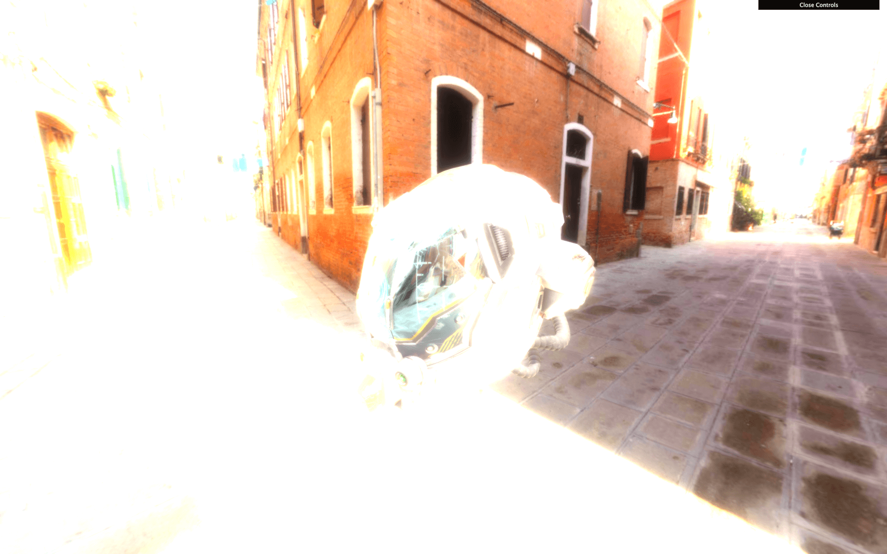
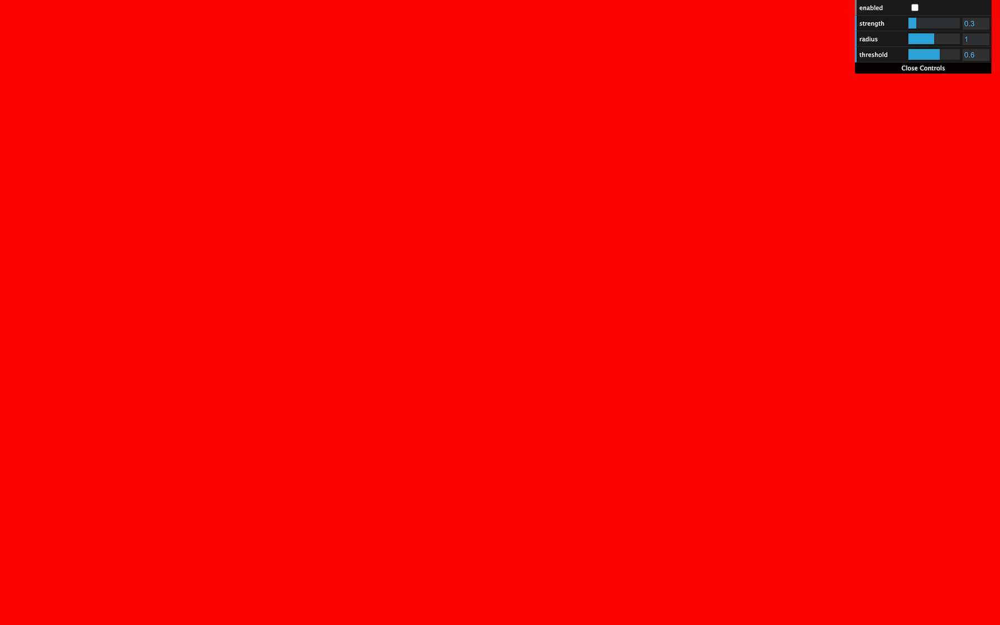
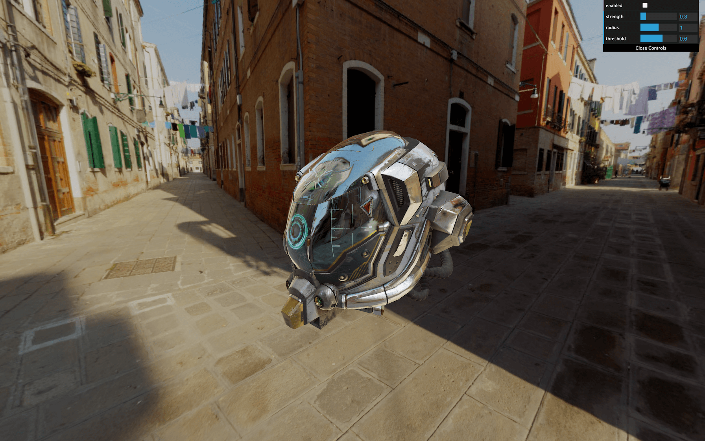
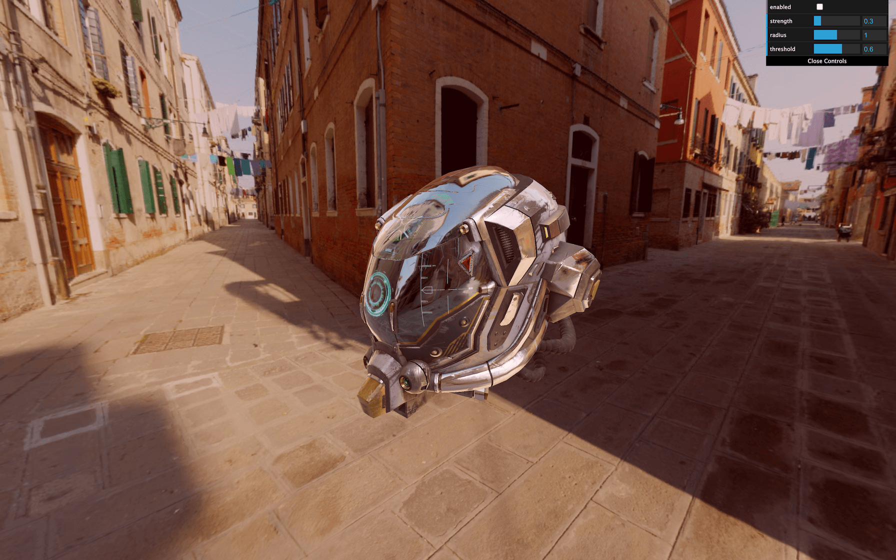

Post-processing is about adding effects on the final image (the render). People mostly use this technique in filmmaking, but we can do it in WebGL too.
Post-processing can be subtle to improve the image slightly or to create huge effects.
Here are some examples of what you can use post-processing for:
We will use the same setup as the Realistic Model Render lesson but with the Damaged Helmet model by Leonardo Carrion. It's a popular model with many details and good textures that should go well with our post-processing.

Most of the time, post-processing works the same way.
Instead of rendering in the canvas, we do the render in what we call a render target. That render target will give us a texture very similar to the usual texture. In a simpler way, we render in a texture instead of the canvas on the screen.
The term "render target" is specific to Three.js. Other contexts mostly use the word "buffer".
This texture is then applied to a plane facing the camera and covering the whole view. This plane uses a material with a special fragment shader that will do the post-processing effect. If the post-processing effect consists of redden the image, it would merely multiply the red value of the pixel in that fragment shader.
Most post-process effects are doing more than just tweaking the color values, but you get the idea.
In Three.js those "effects" are called "passes". We will refer to that term from now on.
We can have multiple passes on our post-process: one doing the motion blur, one doing the color changes, one doing the depth of field, etc. Because we can have multiples passes, the post-processing needs two render targets. The reason is that we can't get the texture of a render target while drawing in it at the same time. The idea is to draw in the first render target while taking the texture from the second one. At the next pass, we switch those render targets, take the texture from the second, and draw on the first. And again at the next pass, we switch them, and again, and again. That is what we call ping pong buffering.
The last pass won't be in a render target because we can put it directly on the canvas so the user can see the final result.
All of these can be very complicated for beginners, but, fortunately, we don't have to do it on our own.
Actually, we could have start without even explaining those render target, textures, ping pong buffering, etc. but it's always good to understand what is really going on behind the scene.
All we have to do is use the EffectComposer class that will handle most of the heavy lifting for us.
As we said, EffectComposer will handle all the process of creating the render targets, doing the ping-pong thing, sending the texture of the previous pass to the current pass, drawing the last one on the canvas, etc.
First, we need to import it because it's not available in the THREE variable:
We will also need a first pass called RenderPass. This pass is in charge of the first render of our scene, but instead of doing it in the canvas, it will happen in a render target created inside the EffectComposer:
We can now instantiate our EffectComposer and use our renderer as parameter. Like the WebGLRenderer, we need to provide a pixel ratio with setPixelRatio(...) and resize it with setSize(...). We will use the same parameters as for the renderer:
Then we can instantiate our first pass and add it to our effectComposer with the addPass(...) method. The RenderPass needs the scene and the camera as parameters:
In the tick function, instead of doing the renders like we used to, we will achieve the renders with effectComposer. Replace the renderer.render(...) with the following code:
The effectComposer will start doing the renders with the ping pong thing and its render targets. But because we only have one pass —the renderPass— it will render it directly in the canvas like before.
It's time to add some neat post-process passes.
You can find a list of available passes in the documentation: https://threejs.org/docs/index.html#examples/en/postprocessing/EffectComposer
We will use some of them to see how we can set things up, and then we will create our own pass.
The DotScreenPass will apply some kind of black and white raster effect. We just need to import the DotScreenPass:
Instantiate it and add it to the effectComposer. Make sure to add it after the renderPass:

To disable a pass, simply comment it or change its enabled property to false:
Use this to test the different passes separately.
The GlitchPass will add screen glitches like when the cameras get hacked in the movies.
Import it and add it just like the DotScreenPass:
Some passes also have editable properties. The GlitchPass have a goWild property that, if true, will result in a non-stop glitch:
Be careful if you are sensible to flashes or fast movements!
Some passes need extra work like the RGBShift pass.
The RGBShift isn't available as a pass but as a shader. We need to import this shader and apply it to a ShaderPass and then add this ShaderPass to the effectComposer. That is precisely what happens in the DotScreenPass and the GlitchPass but we have to do it ourselves this time.
First, import the ShaderPass and the RGBShiftShader located in three/examples/jsm/shaders/:
Then instantiate the ShaderPass with the RGBShiftShader as parameter and add it to the effectComposer:

And that's all.
You might have noticed a color change in the render, as if everything became darker, and you are right. Disable the previous shaders dotScreenPass and the rgbShiftPass to see it more clearly with the glitchPass —without the goWild.
What's happening here is that the renderer.outputEncoding = THREE.sRGBEncoding doesn't work anymore. You can comment it, and you'll see no difference. Passes are rendered in render targets, and those doesn't support encoding the same way.
We need to add one more pass named GammaCorrectionShader that will converter the linear encoding to a sRGB encoding.
This pass works exactly like the RGBShiftShader pass. First, we need to import it:
Then, we can instantiate a ShaderPass with the GammaCorrectionShader as a parameter. Make sure to do it as the last pass:

The color should be fixed.
Reduce the window to a minimal resolution, refresh and increase the resolution to the maximum size. Everything should look bad, like a small image that we stretched up.
That is because the EffectComposer and its passes need to be resized.
In the window.addEventListener('resize', ...) callback function, call the setSize(...) method as we did when we instantiated EffectComposer:
You can resize the window as you want; the resolution should be fine.
There's another feature that seems to stop working. If you look at edges on the helmet, you'll see that the aliasing is back —if you are using a screen with a pixel ratio above 1, you probably can't see the problem.
Be careful; if you only have the renderPass available, you won't see the problem because the render is done in the canvas with antialias support. Enable at least one pass to see the problem.
That is because the render target used by EffectComposer does not support the default antialias. We have four available options:
Things suddenly got complicated.
By default EffectComposer is using the WebGLRenderTarget.
Fortunately, we can provide our own render target as the second parameter of EffectComposer. We are going to provide the same render target to begin with and make sure that everything is working. Then, we are going to provide a render target that supports the antialias.
If you look at the code of the EffectComposer located in /node_modules/three/examples/jsm/postprocessing/EffectComposer.js you'll see the renderTarget being instantiated with specific parameters.
The first two parameters are the width and height. We can use random values because the render target will be resized when the setSize(...) function will be called on effectComposer.
The third parameter is an object and we can copy the object from the Three.js code.
Then, we can send that renderTarget to effectComposer:
We should get the exact same result, but now, we have control over the render target.
The WebGLMultisampleRenderTarget is like the WebGLRenderTarget but with support of the Multi Sample Antialias (MSAA).
We can replace the WebGLRenderTarget by WebGLMultisampleRenderTarget and see an immediate result where the aliasing is gone:
Sadly, this won't work for every browsers. That is a matter of WebGL 2 support. People updated WebGL a few years ago, and browsers slowly add support to the different features. You can see how the support is going on here: https://caniuse.com/#feat=webgl2
At the moment of writing this lesson, major browsers like Safari and iOS Safari only supported it recently.
Let's get back to the WebGLRenderTarget and try to get the antialias working with a pass:
We have different choices for the antialias pass:
Choosing the best antialias pass is a matter of performance and visual expectations. Try them until you're satisfied with what you see at a reasonable frame rate.
For this lesson, we will go for the SMAA.
Import the SMAAPass, instantiate it and add it to effectComposer:
The antialias should be gone.
Now that we know the two leading solutions, we will mix them depending on different criteria:
1, we use the WebGLRenderTarget and no antialias pass.1 and the browser supports WebGL 2, we use a WebGLMultisampleRenderTarget.1 but the browser doesn't support WebGL 2, we use the WebGLRenderTarget and enable the SMAAPass.To get the pixel ratio, we can use the getPixelRatio() method on the renderer.
To know if the browser supports WebGL 2 we can use the capabilities property on the renderer. This property contains many details about what is supported. The property we need is isWebGL2.
First, let's handle the render target. If the pixel ratio is equal to 1 and the browser supports WebGL 2, we use the WebGLMultisampleRenderTarget otherwise, we use the WebGLRenderTarget:
Then we handle the pass. If the pixel ratio is equal to 1 and the browser doesn't support WebGL2, we add the SMAAPass:
And we get a nice picture on every browser with a minimal drawback.
Let's get back to our passes with probably the coolest one, the UnrealBloomPass.
This pass will add bloom on our render that looks amazing. It's useful to recreate things like light glows, fire heat, lasers, lightsabers or radioactive stuff.
Import the UnrealBloomPass and add it to the effectComposer:

Everything appears way too bright. We need to tweak some parameters. There are 3 main parameters:
strength: How strong is the glow.radius: How far that brightness can spread.threshold: At what luminosity limit things start to glow.Use the following parameters and add the tweaks to your Dat.GUI:
This is probably too much glow but you get the idea.
Creating our own pass is as easy as making a custom shader.
We are going to start with an effortless pass that lets us control the color tint.
First, we create a shader. The shader is a simple object with the following properties:
uniforms: Same format as the uniforms we are used too.vertexShader: This one has almost always the same code and will put the plane in front of the view.fragmentShader: The fragment shader that will do the post-processing effect.Let's create that shader with minimal code:
Then we create the pass with ShaderPass and add it to our effectComposer:

The screen should become red because our fragment shader sets the gl_FragColor to a red color.
We need to get the texture from the previous pass. This texture is automatically stored in the tDiffuse uniform. We must add the uniform with a null value —EffectComposer will update it— and retrieve the value in the fragmentShader:
Now that we have the texture of the previous pass, we need to retrieve the pixels as we've already done in a previous lesson. To get the pixels from a sampler2D (a texture), we need to use texture2D(...). It would require a texture as the first parameter and UV coordinates as the second parameter.
The problem is that we don't have those UV coordinates right now. We need to do as usual and create a varying named vUv containing the uv from the vertex shader:

The render is back. But now, we can play with the texture in the fragmentShader.
To change the tint, play with the r, g, and b properties of color:

To go further, let's create a uniform to control the tint. First, add the uTint to the uniforms:
As you can see, we let the value to null. Do not set the values directly in the shader object. You must set them on the material once you have created the pass because the shader is intended to be used multiple times —even if you don't. It's like a template for the pass:
Then we can add the tweaks to our Dat.GUI:
Let's try another custom pass. This time, we won't fiddle with the color but with the UV to produce what we call a displacement.
Create a new shader named DisplacementShader, then a new pass named displacementPass from the ShaderPass and add it to effectComposer:
Now, let's create a newUv based on vUv but with some distortion:
Here, we solely applied a sin(...) on the y axis based on the x axis. You should see the render waving.
Let's animate it. Add a uTime uniform:
Set its value to 0 after creating the pass:
And as always, update it in the tick function:
The waves are now animated.
Instead of a sinus displacement, we can use a texture. You can find a very plain beehive futuristic interface with normal texture in /static/textures/interfaceNormalMap.png.
Add a uNormalMap uniform:
Update it while loading the texture —the TextureLoader is already in the code:
Now update the fragmentShader of the DisplacementShader:
We won't disclose what's happening here because it's not the proper way to achieve this effect, but you should see a compelling interface displacement. Regrettably, the texture fits the screen, and if your resolution isn't proportional, it won't look terrific. No worries, it was just for the show anyway.
What you can do now is try other passes and possibly add new custom passes if you get some ideas or if there are things you want to try.
Keep in mind that each pass you add will have to be rendered on each frame. That can have severe performances drawback.
You could also separate the custom passes into different files and even split the shaders in the .glsl files. This way, you get a cleaner and reusable code.